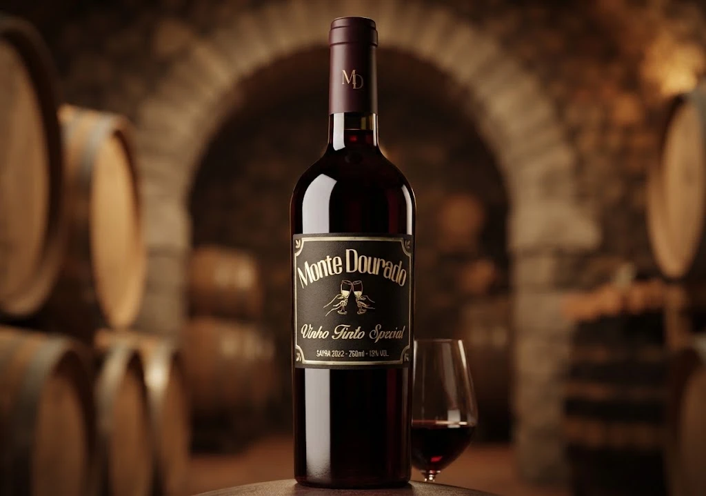
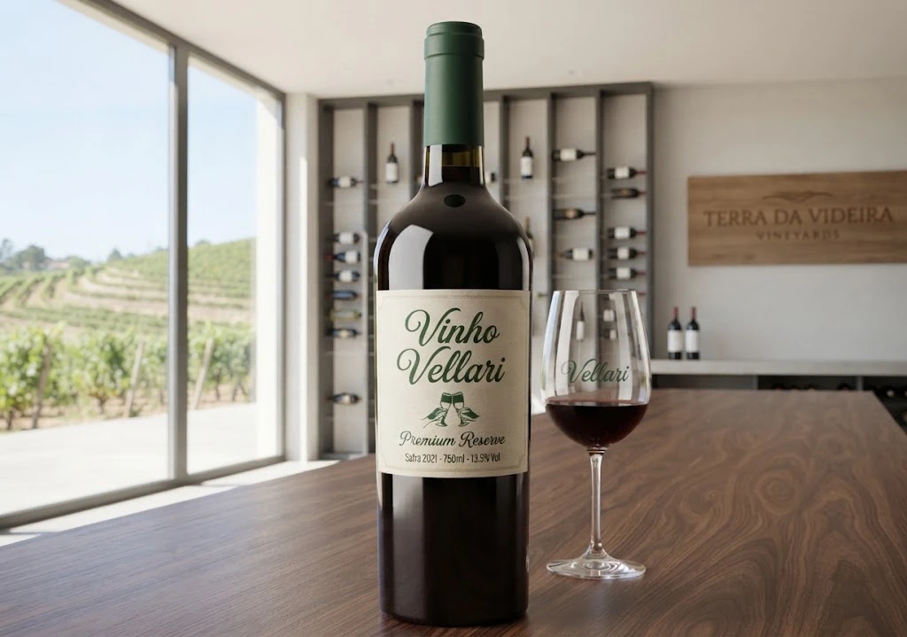
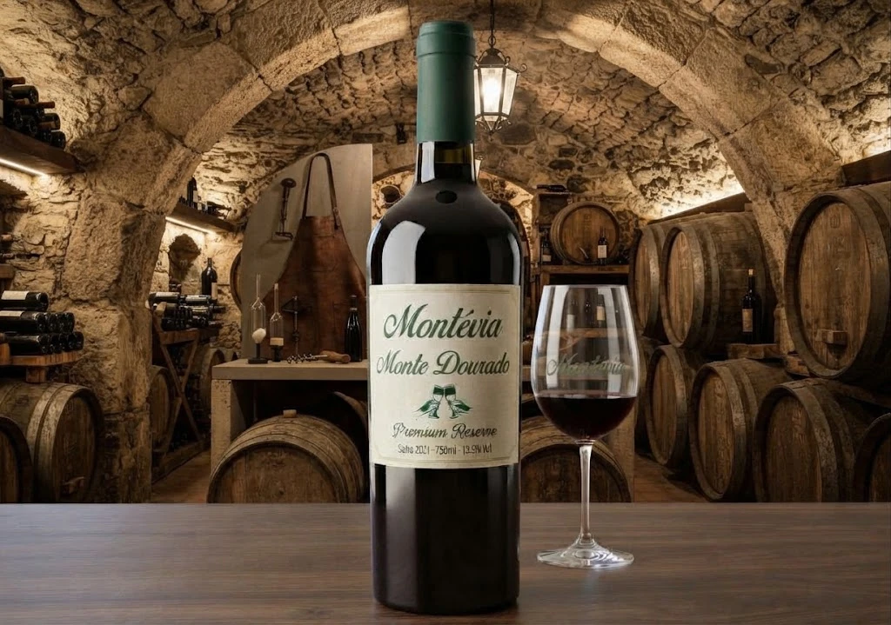
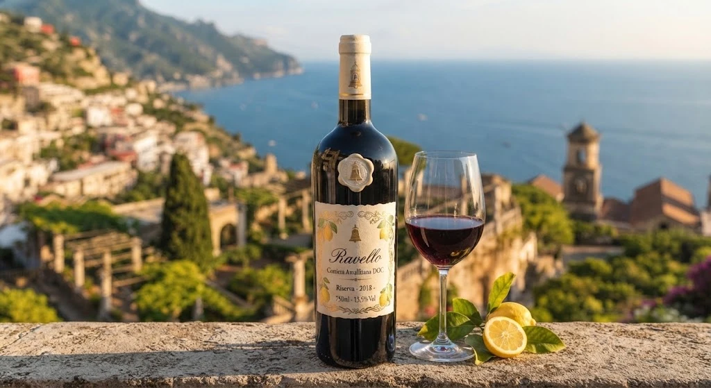
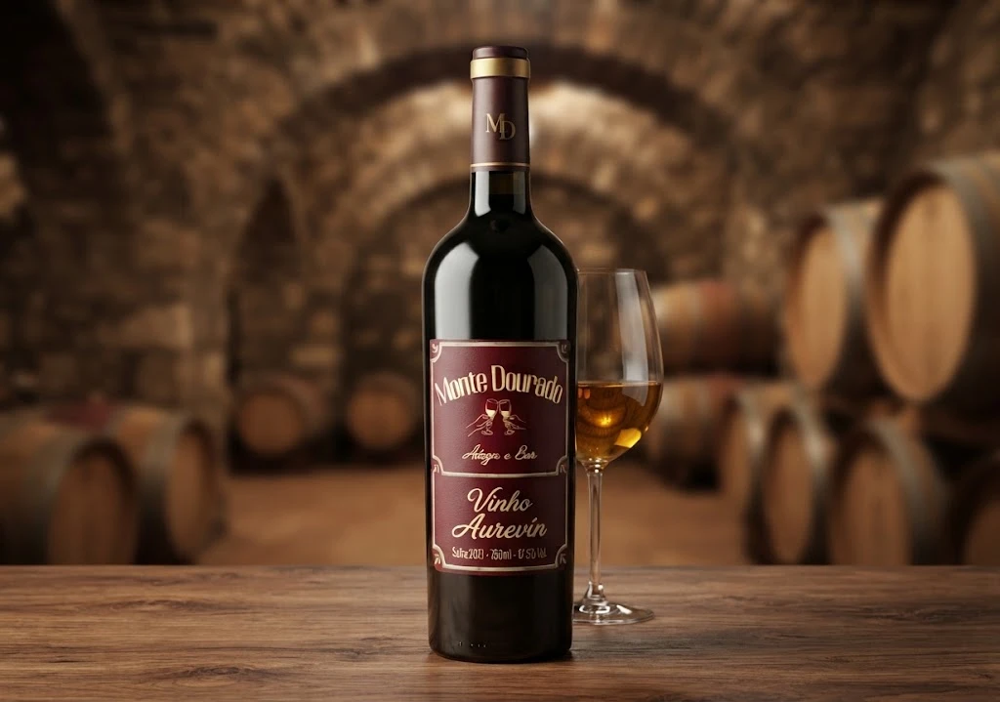

Vinho Tinto Special
Tinto encorpado e marcante, com notas de frutas escuras e final longo. Ótimo com carnes e massas.
Conheça a seleção da nossa adega.

Tinto encorpado e marcante, com notas de frutas escuras e final longo. Ótimo com carnes e massas.

Reserva elegante e equilibrado, com taninos macios e aroma de frutas vermelhas maduras.

Envelhecido em barricas de carvalho, traz notas de especiarias e madeira. Ideal para ocasiões especiais.

Inspirado na Costa Amalfitana, é fresco e aromático, com leve toque cítrico. Combina com massas e frutos do mar.

Dourado e delicado, com aromas de mel e frutas maduras. Perfeito para sobremesas e aperitivos.
Suave e aveludado, de cor âmbar e sabor levemente adocicado. Uma ótima pedida para quem prefere vinhos mais doces.